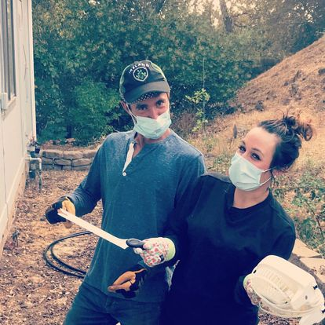
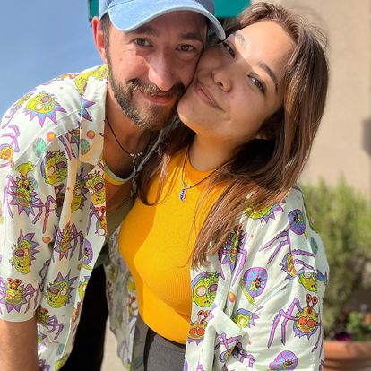
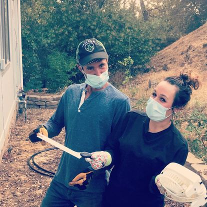
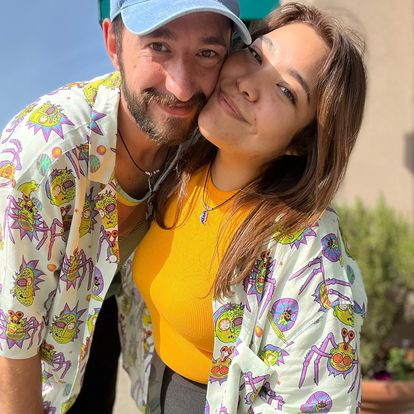
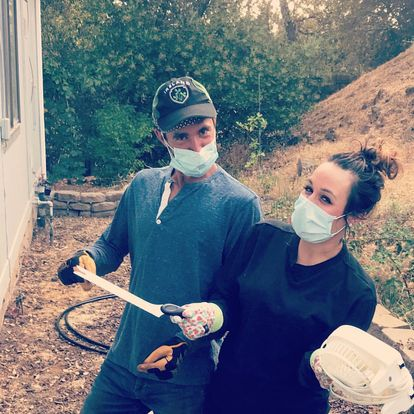
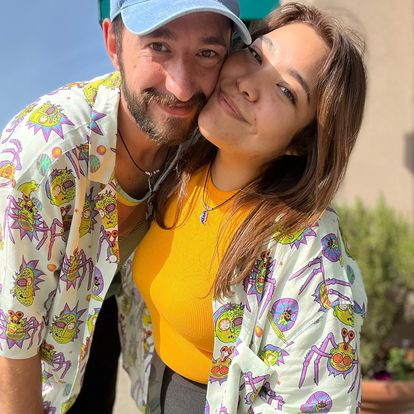

Welcome to my portfolio! You will probably notice the page is quite simple at the moment. This is beacause I am just now learning how to code! I have been at it for one week so far! This is just the beginning! I will be learning how to code for the next six months which is really exciting! Before you know it this page will be improved!


In the list below you will see some of the projects I have been working on! Please keep in mind I am really new at this. I just learned that the em with arrows italicizes texts! How cool is that.
This is my very first webpage! Simple look and the languages used were html and css!
This is exactly what it sounds like! A Cupcake-Shop page! Yum! Languages used were html and css.
A page about a favorite band! This is not my favorite, rather it was one of my pair's favorite bands! Languages used were html and css!
This plant blog page is one I would like to keep working on. Its all about plants! Languages used were html and css!
A little bit about me that you may not know is that I really enjoy being in the garden. I have learned a lot about plants over the years while working at a garden center. Now that I have moved from being outside all day to working indoors, I will have to bring the garden inside with me! Checkout my education, work experience, and interests below to learn more about me!